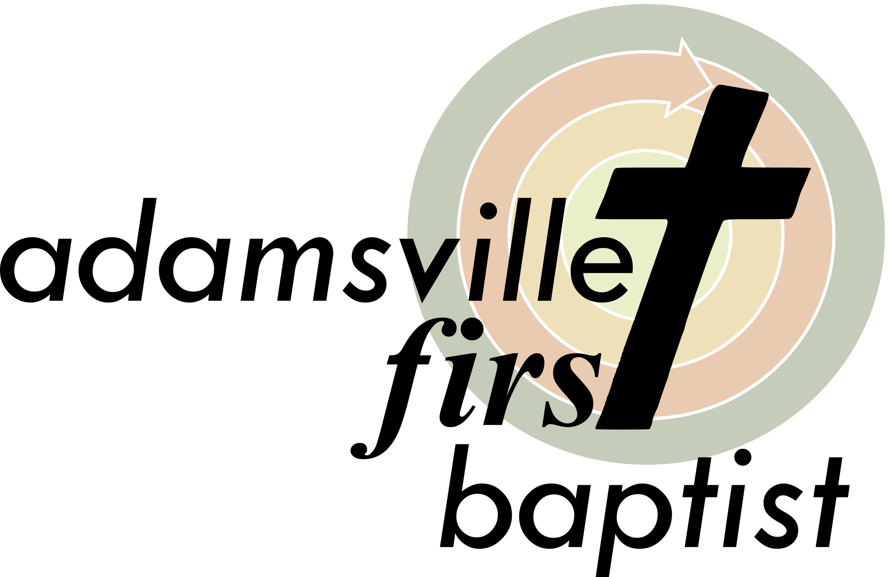

Our Base SVG - Use this to create all others. Any format. Any size.
If you're here and don't know what an SVG is, then don't bother with this one. Also if it looks different from the
logos below, you may not have the necessary font(s) installed on the machine you're viewing this page with. Our logo
requires a font by the name of "Tw Cen MT" (Regular and Italic). If you have MS Office, you probably have it already.
Small - 300x195

Medium - 720x468

Large - 2000x1301
